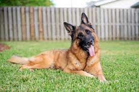
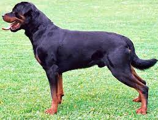
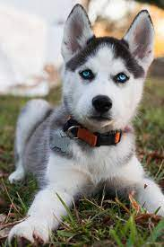
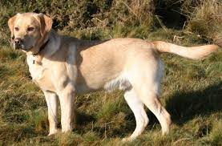

Dog

Dog is a domesticated descendant of the wolf which is characterized by an upturning tail. The dog is derived from an ancient, extinct wolf, and the modern wolf is the dog's nearest living relative. The dog was the first species to be domesticated, by hunter–gatherers over 15,000 years ago, before the development of agriculture.
"No go misbehave oo"
Due to their long association with humans, dogs have expanded to a large number of domestic individuals and gained the ability to thrive on a starch-rich diet that would be inadequate for other canids. Over the millennia, dogs became uniquely adapted to human behavior, and the human-canine bond has been a topic of frequent study.
The dog has been selectively bred over millennia for various behaviors, sensory capabilities, and physical attributes. Dog breeds vary widely in shape, size, and color. They perform many roles for humans, such as hunting, herding, pulling loads, protection, assisting police and the military, companionship, therapy, and aiding disabled people. This influence on human society has given them the sobriquet of "man's best friend".
Domestication
The earliest remains generally accepted to be those of a domesticated dog were discovered in Bonn-Oberkassel, Germany. Contextual, isotopic, genetic, and morphological evidence shows that this dog was not a local wolf. The dog was dated to 14,223 years ago and was found buried along with a man and a woman, all three having been sprayed with red hematite powder and buried under large, thick basalt blocks. The dog had died of canine distemper. Earlier remains dating back to 30,000 years ago have been described as Paleolithic dogs but their status as dogs or wolves remains debated because considerable morphological diversity existed among wolves during the Late Pleistocene.
This timing indicates that the dog was the first species to be domesticated in the time of hunter–gatherers, which predates agriculture. DNA sequences show that all ancient and modern dogs share a common ancestry and descended from an ancient, extinct wolf population which was distinct from the modern wolf lineage. Most dogs form a sister group to the remains of a Late Pleistocene wolf found in the Kessleroch cave near Thayngen in the canton of Schaffhausen, Switzerland, which dates to 14,500 years ago. The most recent common ancestor of both is estimated to be from 32,100 years ago. This indicates that an extinct Late Pleistocene wolf may have been the ancestor of the dog, with the modern wolf being the dog's nearest living relative.
The dog is a classic example of a domestic animal that likely travelled a commensal pathway into domestication. The questions of when and where dogs were first domesticated have taxed geneticists and archaeologists for decades. Genetic studies suggest a domestication process commencing over 25,000 years ago, in one or several wolf populations in either Europe, the high Arctic, or eastern Asia. In 2021, a literature review of the current evidence infers that the dog was domesticated in Siberia 23,000 years ago by ancient North Siberians, then later dispersed eastward into the Americas and westward across Eurasia.

Breeds
Dogs are the most variable mammal on earth with around 450 globally recognized dog breeds. In the Victorian era, directed human selection developed the modern dog breeds, which resulted in a vast range of phenotypes. Most breeds were derived from small numbers of founders within the last 200 years, and since then dogs have undergone rapid phenotypic change and were formed into today's modern breeds due to artificial selection imposed by humans. The skull, body, and limb proportions vary significantly between breeds, with dogs displaying more phenotypic diversity than can be found within the entire order of carnivores. These breeds possess distinct traits related to morphology, which include body size, skull shape, tail phenotype, fur type and colour. Their behavioural traits include guarding, herding, and hunting, retrieving, and scent detection. Their personality traits include hypersocial behavior, boldness, and aggression,[10] which demonstrates the functional and behavioral diversity of dogs. As a result, today dogs are the most abundant carnivore species and are dispersed around the world. The most striking example of this dispersal is that of the numerous modern breeds of European lineage during the Victorian era. list of some breeds are listed below:
- German shepherd
- Bull dog 
- Rottweiler
- Doberman 
- siberian Husky 
- Labrado Retriever e.t.c


If you have any question while i am out of town, I wont have cell service, but you can email me if you need anything.
Thanks again!